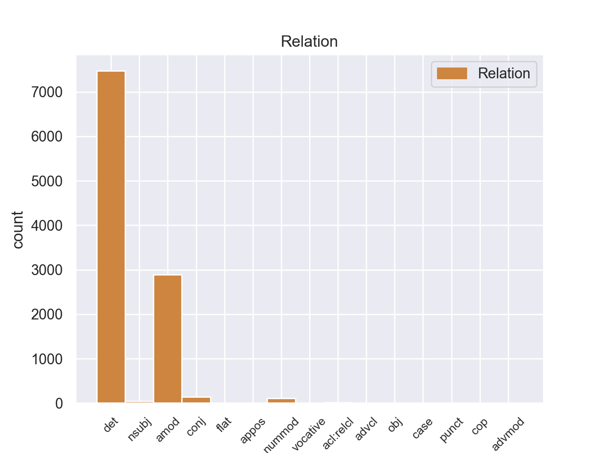
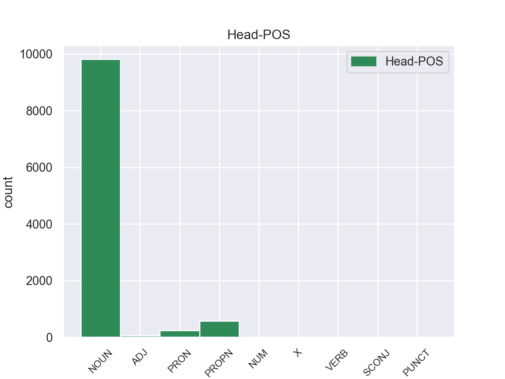
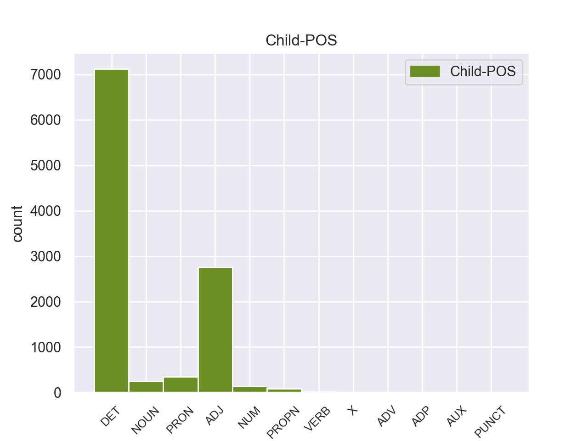

Distribution of features within this leaf



Agreement Rules sorted by frequency.
- When the dependent token is the determiner(det) of the head token, and the head token is NOUN
1 Αυτό _ _ _ _ 0 _ _ _
2 μπορεί _ _ _ _ 0 _ _ _
3 να _ _ _ _ 0 _ _ _
4 μην _ _ _ _ 0 _ _ _
5 οδηγήσει _ _ _ _ 0 _ _ _
6 σ _ _ _ _ 0 _ _ _
7 τη _ _ _ _ 0 _ _ _
8 λήξη _ _ _ _ 0 _ _ _
9 του _ _ _ _ 0 _ _ _
10 εν _ _ _ _ 0 _ _ _
11 λόγω _ _ _ _ 0 _ _ _
12 ζητήματος _ _ _ _ 0 _ _ _
13 αλλά _ _ _ _ 0 _ _ _
14 , _ _ _ _ 0 _ _ _
15 σ _ _ _ _ 0 _ _ _
16 τη _ _ _ _ 0 _ _ _
17 μορφή _ _ _ _ 0 _ _ _
18 υπό _ _ _ _ 0 _ _ _
19 την _ _ _ _ 0 _ _ _
20 οποία _ _ _ _ 0 _ _ _
21 την _ _ _ _ 0 _ _ _
22 λάβαμε _ _ _ _ 0 _ _ _
23 , _ _ _ _ 0 _ _ _
24 αυτή _ _ _ _ 0 _ _ _
25 η _ _ _ _ 0 _ _ _
26 αίτηση _ _ _ _ 0 _ _ _
27 άρσης _ _ _ _ 0 _ _ _
28 της _ _ _ _ 0 _ _ _
29 ασυλίας _ _ _ _ 0 _ _ _
30 ήταν _ _ _ _ 0 _ _ _
31 , _ _ _ _ 0 _ _ _
32 κατά _ _ _ _ 0 _ _ _
33 την _ _ _ _ 0 _ _ _
34 άποψη _ _ _ _ 0 _ _ _
35 της _ _ _ _ 0 _ _ _
36 Επιτροπής _ _ _ _ 0 _ _ _
37 Νομικών _ _ _ _ 0 _ _ _
38 Θεμάτων _ _ _ _ 0 _ _ _
39 , _ _ _ _ 0 _ _ _
40 απαράδεκτη _ _ _ _ 0 _ _ _
41 , _ _ _ _ 0 _ _ _
42 άποψη _ _ _ _ 0 _ _ _
43 την _ _ _ _ 0 _ _ _
44 οποία _ _ _ _ 0 _ _ _
45 συνιστώ _ _ _ _ 0 _ _ _
46 σ _ _ _ _ 0 _ _ _
47 το ο DET _ Case=Acc|Gender=Neut|Number=Sing 48 det _ _
48 Σώμα σώμα NOUN _ Case=Acc|Gender=Neut|Number=Sing 0 _ _ _
49 να _ _ _ _ 0 _ _ _
50 υιοθετήσει _ _ _ _ 0 _ _ _
51 . _ _ _ _ 0 _ _ _
1 Αυτό _ _ _ _ 0 _ _ _
2 μπορεί _ _ _ _ 0 _ _ _
3 να _ _ _ _ 0 _ _ _
4 μην _ _ _ _ 0 _ _ _
5 οδηγήσει _ _ _ _ 0 _ _ _
6 σ _ _ _ _ 0 _ _ _
7 τη _ _ _ _ 0 _ _ _
8 λήξη _ _ _ _ 0 _ _ _
9 του _ _ _ _ 0 _ _ _
10 εν _ _ _ _ 0 _ _ _
11 λόγω _ _ _ _ 0 _ _ _
12 ζητήματος _ _ _ _ 0 _ _ _
13 αλλά _ _ _ _ 0 _ _ _
14 , _ _ _ _ 0 _ _ _
15 σ _ _ _ _ 0 _ _ _
16 τη _ _ _ _ 0 _ _ _
17 μορφή _ _ _ _ 0 _ _ _
18 υπό _ _ _ _ 0 _ _ _
19 την _ _ _ _ 0 _ _ _
20 οποία _ _ _ _ 0 _ _ _
21 την _ _ _ _ 0 _ _ _
22 λάβαμε _ _ _ _ 0 _ _ _
23 , _ _ _ _ 0 _ _ _
24 αυτή _ _ _ _ 0 _ _ _
25 η _ _ _ _ 0 _ _ _
26 αίτηση _ _ _ _ 0 _ _ _
27 άρσης _ _ _ _ 0 _ _ _
28 της _ _ _ _ 0 _ _ _
29 ασυλίας _ _ _ _ 0 _ _ _
30 ήταν _ _ _ _ 0 _ _ _
31 , _ _ _ _ 0 _ _ _
32 κατά _ _ _ _ 0 _ _ _
33 την _ _ _ _ 0 _ _ _
34 άποψη _ _ _ _ 0 _ _ _
35 της _ _ _ _ 0 _ _ _
36 Επιτροπής _ _ _ _ 0 _ _ _
37 Νομικών νομικός ADJ _ Case=Gen|Gender=Fem|Number=Sing 38 amod _ _
38 Θεμάτων θεμάτω NOUN _ Case=Gen|Gender=Neut|Number=Plur 0 _ _ _
39 , _ _ _ _ 0 _ _ _
40 απαράδεκτη _ _ _ _ 0 _ _ _
41 , _ _ _ _ 0 _ _ _
42 άποψη _ _ _ _ 0 _ _ _
43 την _ _ _ _ 0 _ _ _
44 οποία _ _ _ _ 0 _ _ _
45 συνιστώ _ _ _ _ 0 _ _ _
46 σ _ _ _ _ 0 _ _ _
47 το _ _ _ _ 0 _ _ _
48 Σώμα _ _ _ _ 0 _ _ _
49 να _ _ _ _ 0 _ _ _
50 υιοθετήσει _ _ _ _ 0 _ _ _
51 . _ _ _ _ 0 _ _ _
1 Η _ _ _ _ 0 _ _ _
2 εν _ _ _ _ 0 _ _ _
3 λόγω _ _ _ _ 0 _ _ _
4 κοινοποίηση _ _ _ _ 0 _ _ _
5 διαβιβάστηκε _ _ _ _ 0 _ _ _
6 αρχικά _ _ _ _ 0 _ _ _
7 σ _ _ _ _ 0 _ _ _
8 τον _ _ _ _ 0 _ _ _
9 Εισαγγελέα _ _ _ _ 0 _ _ _
10 Πλημμελειοδικών _ _ _ _ 0 _ _ _
11 , _ _ _ _ 0 _ _ _
12 κατόπιν _ _ _ _ 0 _ _ _
13 σ _ _ _ _ 0 _ _ _
14 τον _ _ _ _ 0 _ _ _
15 Εισαγγελέα _ _ _ _ 0 _ _ _
16 Εφετών _ _ _ _ 0 _ _ _
17 του ο DET _ Case=Gen|Definite=Def|Gender=Masc|Number=Sing|PronType=Art 18 det _ _
18 Παρισιού Παρισιού PROPN _ Case=Gen|Gender=Fem|Number=Sing 0 _ _ _
19 , _ _ _ _ 0 _ _ _
20 ο _ _ _ _ 0 _ _ _
21 οποίος _ _ _ _ 0 _ _ _
22 και _ _ _ _ 0 _ _ _
23 την _ _ _ _ 0 _ _ _
24 απέστειλε _ _ _ _ 0 _ _ _
25 σ _ _ _ _ 0 _ _ _
26 τον _ _ _ _ 0 _ _ _
27 Υπουργό _ _ _ _ 0 _ _ _
28 Δικαιοσύνης _ _ _ _ 0 _ _ _
29 και _ _ _ _ 0 _ _ _
30 μέσω _ _ _ _ 0 _ _ _
31 αυτού _ _ _ _ 0 _ _ _
32 διαβιβάστηκε _ _ _ _ 0 _ _ _
33 σ _ _ _ _ 0 _ _ _
34 το _ _ _ _ 0 _ _ _
35 Ευρωπαϊκό _ _ _ _ 0 _ _ _
36 Κοινοβούλιο _ _ _ _ 0 _ _ _
37 . _ _ _ _ 0 _ _ _
1 Αυτό _ _ _ _ 0 _ _ _
2 μπορεί _ _ _ _ 0 _ _ _
3 να _ _ _ _ 0 _ _ _
4 μην _ _ _ _ 0 _ _ _
5 οδηγήσει _ _ _ _ 0 _ _ _
6 σ _ _ _ _ 0 _ _ _
7 τη _ _ _ _ 0 _ _ _
8 λήξη _ _ _ _ 0 _ _ _
9 του _ _ _ _ 0 _ _ _
10 εν _ _ _ _ 0 _ _ _
11 λόγω _ _ _ _ 0 _ _ _
12 ζητήματος _ _ _ _ 0 _ _ _
13 αλλά _ _ _ _ 0 _ _ _
14 , _ _ _ _ 0 _ _ _
15 σ _ _ _ _ 0 _ _ _
16 τη _ _ _ _ 0 _ _ _
17 μορφή _ _ _ _ 0 _ _ _
18 υπό _ _ _ _ 0 _ _ _
19 την _ _ _ _ 0 _ _ _
20 οποία _ _ _ _ 0 _ _ _
21 την _ _ _ _ 0 _ _ _
22 λάβαμε _ _ _ _ 0 _ _ _
23 , _ _ _ _ 0 _ _ _
24 αυτή _ _ _ _ 0 _ _ _
25 η _ _ _ _ 0 _ _ _
26 αίτηση _ _ _ _ 0 _ _ _
27 άρσης _ _ _ _ 0 _ _ _
28 της _ _ _ _ 0 _ _ _
29 ασυλίας _ _ _ _ 0 _ _ _
30 ήταν _ _ _ _ 0 _ _ _
31 , _ _ _ _ 0 _ _ _
32 κατά _ _ _ _ 0 _ _ _
33 την _ _ _ _ 0 _ _ _
34 άποψη _ _ _ _ 0 _ _ _
35 της _ _ _ _ 0 _ _ _
36 Επιτροπής _ _ _ _ 0 _ _ _
37 Νομικών _ _ _ _ 0 _ _ _
38 Θεμάτων _ _ _ _ 0 _ _ _
39 , _ _ _ _ 0 _ _ _
40 απαράδεκτη _ _ _ _ 0 _ _ _
41 , _ _ _ _ 0 _ _ _
42 άποψη _ _ _ _ 0 _ _ _
43 την ο DET _ Case=Acc|Definite=Def|Gender=Fem|Number=Sing|PronType=Art 44 det _ _
44 οποία οποία PRON _ Case=Acc|Gender=Fem|Number=Sing|Person=3|PronType=Rel 0 _ _ _
45 συνιστώ _ _ _ _ 0 _ _ _
46 σ _ _ _ _ 0 _ _ _
47 το _ _ _ _ 0 _ _ _
48 Σώμα _ _ _ _ 0 _ _ _
49 να _ _ _ _ 0 _ _ _
50 υιοθετήσει _ _ _ _ 0 _ _ _
51 . _ _ _ _ 0 _ _ _
1 Είναι _ _ _ _ 0 _ _ _
2 σημαντικό _ _ _ _ 0 _ _ _
3 να _ _ _ _ 0 _ _ _
4 υπογραμμίσω _ _ _ _ 0 _ _ _
5 το _ _ _ _ 0 _ _ _
6 γεγονός _ _ _ _ 0 _ _ _
7 ότι _ _ _ _ 0 _ _ _
8 και _ _ _ _ 0 _ _ _
9 οι _ _ _ _ 0 _ _ _
10 δύο δύο NUM _ Case=Nom|Gender=Fem|Number=Plur 11 nummod _ _
11 βουλευτές βουλευτές NOUN _ Case=Nom|Gender=Masc|Number=Plur 0 _ _ _
12 διατρανώνουν _ _ _ _ 0 _ _ _
13 σθεναρά _ _ _ _ 0 _ _ _
14 την _ _ _ _ 0 _ _ _
15 αθωότητά _ _ _ _ 0 _ _ _
16 τους _ _ _ _ 0 _ _ _
17 και _ _ _ _ 0 _ _ _
18 καταγγέλλουν _ _ _ _ 0 _ _ _
19 αυτό _ _ _ _ 0 _ _ _
20 που _ _ _ _ 0 _ _ _
21 οι _ _ _ _ 0 _ _ _
22 ίδιοι _ _ _ _ 0 _ _ _
23 θεωρούν _ _ _ _ 0 _ _ _
24 καταχρήσεις _ _ _ _ 0 _ _ _
25 σ _ _ _ _ 0 _ _ _
26 τη _ _ _ _ 0 _ _ _
27 διαδικασία _ _ _ _ 0 _ _ _
28 δίωξης _ _ _ _ 0 _ _ _
29 . _ _ _ _ 0 _ _ _
1 Με _ _ _ _ 0 _ _ _
2 αυτές _ _ _ _ 0 _ _ _
3 τις _ _ _ _ 0 _ _ _
4 κατηγορίες _ _ _ _ 0 _ _ _
5 , _ _ _ _ 0 _ _ _
6 από _ _ _ _ 0 _ _ _
7 τις _ _ _ _ 0 _ _ _
8 οποίες _ _ _ _ 0 _ _ _
9 η _ _ _ _ 0 _ _ _
10 πρώτη _ _ _ _ 0 _ _ _
11 αφορά _ _ _ _ 0 _ _ _
12 λαθρεμπόριο _ _ _ _ 0 _ _ _
13 όπλων _ _ _ _ 0 _ _ _
14 κλπ. _ _ _ _ 0 _ _ _
15 , _ _ _ _ 0 _ _ _
16 και _ _ _ _ 0 _ _ _
17 βαρύνει _ _ _ _ 0 _ _ _
18 τόσο _ _ _ _ 0 _ _ _
19 τον _ _ _ _ 0 _ _ _
20 κ. _ _ _ _ 0 _ _ _
21 Pasqua _ _ _ _ 0 _ _ _
22 όσο _ _ _ _ 0 _ _ _
23 και _ _ _ _ 0 _ _ _
24 τον _ _ _ _ 0 _ _ _
25 κ. _ _ _ _ 0 _ _ _
26 Marchiani _ _ _ _ 0 _ _ _
27 , _ _ _ _ 0 _ _ _
28 ενώ _ _ _ _ 0 _ _ _
29 η _ _ _ _ 0 _ _ _
30 δεύτερη _ _ _ _ 0 _ _ _
31 στρέφεται _ _ _ _ 0 _ _ _
32 μόνον _ _ _ _ 0 _ _ _
33 εναντίον _ _ _ _ 0 _ _ _
34 του _ _ _ _ 0 _ _ _
35 κ. _ _ _ _ 0 _ _ _
36 Pasqua _ _ _ _ 0 _ _ _
37 , _ _ _ _ 0 _ _ _
38 οι _ _ _ _ 0 _ _ _
39 ανακριτές _ _ _ _ 0 _ _ _
40 δικαστές _ _ _ _ 0 _ _ _
41 ζητούν _ _ _ _ 0 _ _ _
42 την _ _ _ _ 0 _ _ _
43 άρση _ _ _ _ 0 _ _ _
44 της _ _ _ _ 0 _ _ _
45 βουλευτικής _ _ _ _ 0 _ _ _
46 ασυλίας _ _ _ _ 0 _ _ _
47 των _ _ _ _ 0 _ _ _
48 εν _ _ _ _ 0 _ _ _
49 λόγω _ _ _ _ 0 _ _ _
50 δύο _ _ _ _ 0 _ _ _
51 κυρίων _ _ _ _ 0 _ _ _
52 , _ _ _ _ 0 _ _ _
53 προκειμένου _ _ _ _ 0 _ _ _
54 να _ _ _ _ 0 _ _ _
55 τους _ _ _ _ 0 _ _ _
56 επιβληθούν _ _ _ _ 0 _ _ _
57 ορισμένα _ _ _ _ 0 _ _ _
58 μέτρα _ _ _ _ 0 _ _ _
59 δικαστικής _ _ _ _ 0 _ _ _
60 επιτήρησης _ _ _ _ 0 _ _ _
61 : _ _ _ _ 0 _ _ _
62 να _ _ _ _ 0 _ _ _
63 τους _ _ _ _ 0 _ _ _
64 απαγορευθεί _ _ _ _ 0 _ _ _
65 η _ _ _ _ 0 _ _ _
66 επαφή _ _ _ _ 0 _ _ _
67 με _ _ _ _ 0 _ _ _
68 διάφορους _ _ _ _ 0 _ _ _
69 μάρτυρες μάρτυρο NOUN _ Case=Acc|Gender=Masc|Number=Plur 0 _ _ _
70 ή _ _ _ _ 0 _ _ _
71 συγκατηγορουμένους συγκατηγορουμένους NOUN _ Case=Acc|Gender=Masc|Number=Plur 69 conj _ _
72 σ _ _ _ _ 0 _ _ _
73 τις _ _ _ _ 0 _ _ _
74 υποθέσεις _ _ _ _ 0 _ _ _
75 αυτές _ _ _ _ 0 _ _ _
76 και _ _ _ _ 0 _ _ _
77 η _ _ _ _ 0 _ _ _
78 μετάβαση _ _ _ _ 0 _ _ _
79 σε _ _ _ _ 0 _ _ _
80 διάφορες _ _ _ _ 0 _ _ _
81 χώρες _ _ _ _ 0 _ _ _
82 , _ _ _ _ 0 _ _ _
83 καθώς _ _ _ _ 0 _ _ _
84 και _ _ _ _ 0 _ _ _
85 να _ _ _ _ 0 _ _ _
86 τους _ _ _ _ 0 _ _ _
87 επιβληθεί _ _ _ _ 0 _ _ _
88 ενδεχομένως _ _ _ _ 0 _ _ _
89 η _ _ _ _ 0 _ _ _
90 καταβολή _ _ _ _ 0 _ _ _
91 εγγύησης _ _ _ _ 0 _ _ _
92 . _ _ _ _ 0 _ _ _
1 Είναι _ _ _ _ 0 _ _ _
2 γνωστά _ _ _ _ 0 _ _ _
3 για _ _ _ _ 0 _ _ _
4 τη _ _ _ _ 0 _ _ _
5 ναυμαχία _ _ _ _ 0 _ _ _
6 Κορινθίων _ _ _ _ 0 _ _ _
7 και _ _ _ _ 0 _ _ _
8 Θεσπρωτών θεσπρωτός PROPN _ Case=Gen|Gender=Fem|Number=Sing 0 _ _ _
9 εναντίον _ _ _ _ 0 _ _ _
10 των _ _ _ _ 0 _ _ _
11 Κερκυραίων Κερκυραίων PROPN _ Case=Gen|Gender=Masc|Number=Plur 8 conj _ _
12 το _ _ _ _ 0 _ _ _
13 433 _ _ _ _ 0 _ _ _
14 π.Χ. _ _ _ _ 0 _ _ _
15 κατά _ _ _ _ 0 _ _ _
16 τον _ _ _ _ 0 _ _ _
17 Πελοποννησιακό _ _ _ _ 0 _ _ _
18 πόλεμο _ _ _ _ 0 _ _ _
19 . _ _ _ _ 0 _ _ _
1 Οι _ _ _ _ 0 _ _ _
2 κρατούμενοι _ _ _ _ 0 _ _ _
3 έδωσαν _ _ _ _ 0 _ _ _
4 σ _ _ _ _ 0 _ _ _
5 τους _ _ _ _ 0 _ _ _
6 δεσμοφύλακες _ _ _ _ 0 _ _ _
7 χουρμάδες _ _ _ _ 0 _ _ _
8 με _ _ _ _ 0 _ _ _
9 υπνωτικό _ _ _ _ 0 _ _ _
10 και _ _ _ _ 0 _ _ _
11 όταν _ _ _ _ 0 _ _ _
12 οι ο DET _ Case=Nom|Definite=Def|Gender=Masc|Number=Plur|PronType=Art 13 det _ _
13 τελευταίοι τελευταίοι ADJ _ Case=Nom|Gender=Masc|Number=Plur 0 _ _ _
14 αποκοιμήθηκαν _ _ _ _ 0 _ _ _
15 κατάφεραν _ _ _ _ 0 _ _ _
16 να _ _ _ _ 0 _ _ _
17 αποδράσουν _ _ _ _ 0 _ _ _
18 . _ _ _ _ 0 _ _ _
1 Το _ _ _ _ 0 _ _ _
2 2001 _ _ _ _ 0 _ _ _
3 , _ _ _ _ 0 _ _ _
4 εκπρόσωποι _ _ _ _ 0 _ _ _
5 ομάδων _ _ _ _ 0 _ _ _
6 των _ _ _ _ 0 _ _ _
7 εξόριστων εξόριστός ADJ _ Case=Gen|Gender=Masc|Number=Plur 8 amod _ _
8 Θιβετιανών θιβετιανός PROPN _ Case=Gen|Gender=Fem|Number=Sing 0 _ _ _
9 κατάφεραν _ _ _ _ 0 _ _ _
10 να _ _ _ _ 0 _ _ _
11 πάρουν _ _ _ _ 0 _ _ _
12 διαπίστευση _ _ _ _ 0 _ _ _
13 για _ _ _ _ 0 _ _ _
14 συμμετοχή _ _ _ _ 0 _ _ _
15 σε _ _ _ _ 0 _ _ _
16 μία _ _ _ _ 0 _ _ _
17 συνάντηση _ _ _ _ 0 _ _ _
18 μη _ _ _ _ 0 _ _ _
19 κυβερνητικών _ _ _ _ 0 _ _ _
20 οργανώσεων _ _ _ _ 0 _ _ _
21 , _ _ _ _ 0 _ _ _
22 υπό _ _ _ _ 0 _ _ _
23 την _ _ _ _ 0 _ _ _
24 αιγίδα _ _ _ _ 0 _ _ _
25 του _ _ _ _ 0 _ _ _
26 ΟΗΕ _ _ _ _ 0 _ _ _
27 . _ _ _ _ 0 _ _ _
1 Ο _ _ _ _ 0 _ _ _
2 λόγος _ _ _ _ 0 _ _ _
3 γίνεται _ _ _ _ 0 _ _ _
4 για _ _ _ _ 0 _ _ _
5 τον _ _ _ _ 0 _ _ _
6 Χάουμε _ _ _ _ 0 _ _ _
7 Μάτας _ _ _ _ 0 _ _ _
8 , _ _ _ _ 0 _ _ _
9 ο _ _ _ _ 0 _ _ _
10 οποίος οποίος PRON _ Case=Nom|Gender=Masc|Number=Sing|Person=3|PronType=Rel 12 nsubj _ _
11 ήταν _ _ _ _ 0 _ _ _
12 Υπουργός υπουργός NOUN _ Case=Nom|Gender=Masc|Number=Sing 0 _ _ _
13 Περιβάλλοντος _ _ _ _ 0 _ _ _
14 τα _ _ _ _ 0 _ _ _
15 έτη _ _ _ _ 0 _ _ _
16 2000-2003 _ _ _ _ 0 _ _ _
17 και _ _ _ _ 0 _ _ _
18 Περιφερειακός _ _ _ _ 0 _ _ _
19 Πρωθυπουργός _ _ _ _ 0 _ _ _
20 των _ _ _ _ 0 _ _ _
21 Βαλεαρίδων _ _ _ _ 0 _ _ _
22 Νήσων _ _ _ _ 0 _ _ _
23 κατά _ _ _ _ 0 _ _ _
24 την _ _ _ _ 0 _ _ _
25 περίοδο _ _ _ _ 0 _ _ _
26 2003-2007 _ _ _ _ 0 _ _ _
27 . _ _ _ _ 0 _ _ _
1 Σ _ _ _ _ 0 _ _ _
2 το ο DET _ Case=Acc|Gender=Neut|Number=Sing 3 det _ _
3 δεύτερο δεύτερος NUM _ Case=Acc|Gender=Neut|Number=Sing 0 _ _ _
4 , _ _ _ _ 0 _ _ _
5 οι _ _ _ _ 0 _ _ _
6 Ρώσοι _ _ _ _ 0 _ _ _
7 προσπάθησαν _ _ _ _ 0 _ _ _
8 να _ _ _ _ 0 _ _ _
9 ισοφαρίσουν _ _ _ _ 0 _ _ _
10 , _ _ _ _ 0 _ _ _
11 αλλά _ _ _ _ 0 _ _ _
12 ένα _ _ _ _ 0 _ _ _
13 λεπτό _ _ _ _ 0 _ _ _
14 πριν _ _ _ _ 0 _ _ _
15 τη _ _ _ _ 0 _ _ _
16 λήξη _ _ _ _ 0 _ _ _
17 ο _ _ _ _ 0 _ _ _
18 Ολιβέιρα _ _ _ _ 0 _ _ _
19 σκόραρε _ _ _ _ 0 _ _ _
20 το _ _ _ _ 0 _ _ _
21 δεύτερο _ _ _ _ 0 _ _ _
22 γκολ _ _ _ _ 0 _ _ _
23 των _ _ _ _ 0 _ _ _
24 Πορτογάλων _ _ _ _ 0 _ _ _
25 . _ _ _ _ 0 _ _ _
1 Η _ _ _ _ 0 _ _ _
2 Μπενφίκα Μπενφίκα NOUN _ Case=Nom|Gender=Fem|Number=Sing 5 nsubj _ _
3 ήταν _ _ _ _ 0 _ _ _
4 πιο _ _ _ _ 0 _ _ _
5 επιθετική επιθετική ADJ _ Case=Nom|Gender=Fem|Number=Sing 0 _ _ _
6 και _ _ _ _ 0 _ _ _
7 καλύτερη _ _ _ _ 0 _ _ _
8 σ _ _ _ _ 0 _ _ _
9 το _ _ _ _ 0 _ _ _
10 πρώτο _ _ _ _ 0 _ _ _
11 ημίχρονο _ _ _ _ 0 _ _ _
12 , _ _ _ _ 0 _ _ _
13 με _ _ _ _ 0 _ _ _
14 αποτέλεσμα _ _ _ _ 0 _ _ _
15 να _ _ _ _ 0 _ _ _
16 ανοίξει _ _ _ _ 0 _ _ _
17 το _ _ _ _ 0 _ _ _
18 σκορ _ _ _ _ 0 _ _ _
19 σ _ _ _ _ 0 _ _ _
20 το _ _ _ _ 0 _ _ _
21 πρώτο _ _ _ _ 0 _ _ _
22 λεπτό _ _ _ _ 0 _ _ _
23 των _ _ _ _ 0 _ _ _
24 καθυστερήσεων _ _ _ _ 0 _ _ _
25 , _ _ _ _ 0 _ _ _
26 χάρη _ _ _ _ 0 _ _ _
27 σ _ _ _ _ 0 _ _ _
28 τον _ _ _ _ 0 _ _ _
29 Μάξι _ _ _ _ 0 _ _ _
30 Περέιρα _ _ _ _ 0 _ _ _
31 . _ _ _ _ 0 _ _ _
1 " _ _ _ _ 0 _ _ _
2 Θα _ _ _ _ 0 _ _ _
3 καταβάλουμε _ _ _ _ 0 _ _ _
4 κάθε _ _ _ _ 0 _ _ _
5 προσπάθεια _ _ _ _ 0 _ _ _
6 για _ _ _ _ 0 _ _ _
7 να _ _ _ _ 0 _ _ _
8 ολοκληρώσουμε _ _ _ _ 0 _ _ _
9 την _ _ _ _ 0 _ _ _
10 έρευνα _ _ _ _ 0 _ _ _
11 το _ _ _ _ 0 _ _ _
12 συντομότερο _ _ _ _ 0 _ _ _
13 δυνατόν δυνατόν NOUN _ Case=Acc|Gender=Neut|Number=Sing 0 _ _ _
14 γιατί _ _ _ _ 0 _ _ _
15 το _ _ _ _ 0 _ _ _
16 Βιετνάμ _ _ _ _ 0 _ _ _
17 έχει _ _ _ _ 0 _ _ _
18 πραγματικά _ _ _ _ 0 _ _ _
19 ανάγκη ανάγκη NOUN _ Case=Acc|Gender=Fem|Number=Sing 13 acl:relcl _ _
20 το _ _ _ _ 0 _ _ _
21 εμβόλιο _ _ _ _ 0 _ _ _
22 αυτό _ _ _ _ 0 _ _ _
23 " _ _ _ _ 0 _ _ _
24 , _ _ _ _ 0 _ _ _
25 τόνισε _ _ _ _ 0 _ _ _
26 η _ _ _ _ 0 _ _ _
27 Νγκουγέν _ _ _ _ 0 _ _ _
28 Τι _ _ _ _ 0 _ _ _
29 Χονγκ _ _ _ _ 0 _ _ _
30 Χανχ _ _ _ _ 0 _ _ _
31 αναπληρώτρια _ _ _ _ 0 _ _ _
32 διευθύντρια _ _ _ _ 0 _ _ _
33 του _ _ _ _ 0 _ _ _
34 Εθνικού _ _ _ _ 0 _ _ _
35 Ινστιτούτου _ _ _ _ 0 _ _ _
36 Επιδημιολογίας _ _ _ _ 0 _ _ _
37 . _ _ _ _ 0 _ _ _
1 Το _ _ _ _ 0 _ _ _
2 πάρκο _ _ _ _ 0 _ _ _
3 απλώνεται _ _ _ _ 0 _ _ _
4 σε _ _ _ _ 0 _ _ _
5 θαλάσσια _ _ _ _ 0 _ _ _
6 περιοχή _ _ _ _ 0 _ _ _
7 2.200 _ _ _ _ 0 _ _ _
8 τετραγωνικών _ _ _ _ 0 _ _ _
9 χιλιομέτρων _ _ _ _ 0 _ _ _
10 βόρεια _ _ _ _ 0 _ _ _
11 της _ _ _ _ 0 _ _ _
12 Αλοννήσου _ _ _ _ 0 _ _ _
13 και _ _ _ _ 0 _ _ _
14 περιλαμβάνει _ _ _ _ 0 _ _ _
15 - _ _ _ _ 0 _ _ _
16 εκτός _ _ _ _ 0 _ _ _
17 από _ _ _ _ 0 _ _ _
18 την _ _ _ _ 0 _ _ _
19 Αλόννησο _ _ _ _ 0 _ _ _
20 - _ _ _ _ 0 _ _ _
21 τα _ _ _ _ 0 _ _ _
22 ακατοίκητα _ _ _ _ 0 _ _ _
23 νησιά _ _ _ _ 0 _ _ _
24 και _ _ _ _ 0 _ _ _
25 τις _ _ _ _ 0 _ _ _
26 βραχονησίδες _ _ _ _ 0 _ _ _
27 Περιστέρα _ _ _ _ 0 _ _ _
28 , _ _ _ _ 0 _ _ _
29 Δύο _ _ _ _ 0 _ _ _
30 Αδελφοί _ _ _ _ 0 _ _ _
31 , _ _ _ _ 0 _ _ _
32 Κυρά Κυρά NOUN _ Case=Gen|Gender=Fem|Number=Sing 0 _ _ _
33 Παναγιά Παναγιά PROPN _ Case=Gen|Gender=Fem|Number=Sing 32 flat _ _
34 , _ _ _ _ 0 _ _ _
35 Παππούς _ _ _ _ 0 _ _ _
36 , _ _ _ _ 0 _ _ _
37 Σκάντουρα _ _ _ _ 0 _ _ _
38 , _ _ _ _ 0 _ _ _
39 Γιούρα _ _ _ _ 0 _ _ _
40 , _ _ _ _ 0 _ _ _
41 Ψαθούρα _ _ _ _ 0 _ _ _
42 , _ _ _ _ 0 _ _ _
43 Πιπέρι _ _ _ _ 0 _ _ _
44 . _ _ _ _ 0 _ _ _
1 Παράλληλα _ _ _ _ 0 _ _ _
2 , _ _ _ _ 0 _ _ _
3 η ο DET _ Case=Nom|Definite=Def|Gender=Fem|Number=Sing|PronType=Art 4 det _ _
4 Άρσεναλ Άρσεναλ X _ Case=Nom|Gender=Fem|Number=Sing 0 _ _ _
5 νίκησε _ _ _ _ 0 _ _ _
6 την _ _ _ _ 0 _ _ _
7 Μίλαν _ _ _ _ 0 _ _ _
8 με _ _ _ _ 0 _ _ _
9 σκορ _ _ _ _ 0 _ _ _
10 3:0 _ _ _ _ 0 _ _ _
11 , _ _ _ _ 0 _ _ _
12 αλλά _ _ _ _ 0 _ _ _
13 προκρίθηκε _ _ _ _ 0 _ _ _
14 η _ _ _ _ 0 _ _ _
15 δεύτερη _ _ _ _ 0 _ _ _
16 . _ _ _ _ 0 _ _ _
1 Τα _ _ _ _ 0 _ _ _
2 ευρωπαϊκά _ _ _ _ 0 _ _ _
3 πολεμικά _ _ _ _ 0 _ _ _
4 χτύπησαν _ _ _ _ 0 _ _ _
5 με _ _ _ _ 0 _ _ _
6 τα _ _ _ _ 0 _ _ _
7 πυροβόλα _ _ _ _ 0 _ _ _
8 τους _ _ _ _ 0 _ _ _
9 , _ _ _ _ 0 _ _ _
10 τους _ _ _ _ 0 _ _ _
11 επαναστάτες _ _ _ _ 0 _ _ _
12 σ _ _ _ _ 0 _ _ _
13 το _ _ _ _ 0 _ _ _
14 Ακρωτήρι _ _ _ _ 0 _ _ _
15 , _ _ _ _ 0 _ _ _
16 ρίχνοντας _ _ _ _ 0 _ _ _
17 τη _ _ _ _ 0 _ _ _
18 σημαία _ _ _ _ 0 _ _ _
19 που _ _ _ _ 0 _ _ _
20 υψώθηκε _ _ _ _ 0 _ _ _
21 αμέσως _ _ _ _ 0 _ _ _
22 πάλι _ _ _ _ 0 _ _ _
23 υπό _ _ _ _ 0 _ _ _
24 τις _ _ _ _ 0 _ _ _
25 θυελλώδεις _ _ _ _ 0 _ _ _
26 ζητωκραυγές _ _ _ _ 0 _ _ _
27 των _ _ _ _ 0 _ _ _
28 πληρωμάτων _ _ _ _ 0 _ _ _
29 των _ _ _ _ 0 _ _ _
30 ελληνικών _ _ _ _ 0 _ _ _
31 πολεμικών _ _ _ _ 0 _ _ _
32 που _ _ _ _ 0 _ _ _
33 ναυλοχούσαν _ _ _ _ 0 _ _ _
34 στ' _ _ _ _ 0 _ _ _
35 ανοιχτά _ _ _ _ 0 _ _ _
36 αλλά _ _ _ _ 0 _ _ _
37 δεν _ _ _ _ 0 _ _ _
38 μπορούσαν _ _ _ _ 0 _ _ _
39 να _ _ _ _ 0 _ _ _
40 επέμβουν _ _ _ _ 0 _ _ _
41 ενώ _ _ _ _ 0 _ _ _
42 σ _ _ _ _ 0 _ _ _
43 το _ _ _ _ 0 _ _ _
44 θωρηκτό _ _ _ _ 0 _ _ _
45 " " NOUN _ Case=Acc|Gender=Neut|Number=Sing 46 punct _ _
46 Ύδρα ύδρα NOUN _ Case=Acc|Gender=Neut|Number=Sing 0 _ _ _
47 " _ _ _ _ 0 _ _ _
48 γινόταν _ _ _ _ 0 _ _ _
49 ανάκρουση _ _ _ _ 0 _ _ _
50 του _ _ _ _ 0 _ _ _
51 Εθνικού _ _ _ _ 0 _ _ _
52 μας _ _ _ _ 0 _ _ _
53 Ύμνου _ _ _ _ 0 _ _ _
54 . _ _ _ _ 0 _ _ _
1 Κύριε κύριε ADJ _ Case=Nom|Gender=Masc|Number=Plur 2 vocative _ _
2 Πρόεδρε πρόεδρε NOUN _ Case=Nom|Gender=Masc|Number=Plur 0 _ _ _
3 , _ _ _ _ 0 _ _ _
4 κύριε _ _ _ _ 0 _ _ _
5 Προεδρεύοντα _ _ _ _ 0 _ _ _
6 του _ _ _ _ 0 _ _ _
7 Συμβουλίου _ _ _ _ 0 _ _ _
8 , _ _ _ _ 0 _ _ _
9 κύριε _ _ _ _ 0 _ _ _
10 Πρόεδρε _ _ _ _ 0 _ _ _
11 της _ _ _ _ 0 _ _ _
12 Επιτροπής _ _ _ _ 0 _ _ _
13 , _ _ _ _ 0 _ _ _
14 κυρίες _ _ _ _ 0 _ _ _
15 και _ _ _ _ 0 _ _ _
16 κύριοι _ _ _ _ 0 _ _ _
17 , _ _ _ _ 0 _ _ _
18 καταρχάς _ _ _ _ 0 _ _ _
19 , _ _ _ _ 0 _ _ _
20 ευχαριστώ _ _ _ _ 0 _ _ _
21 την _ _ _ _ 0 _ _ _
22 ισπανική _ _ _ _ 0 _ _ _
23 Προεδρία _ _ _ _ 0 _ _ _
24 για _ _ _ _ 0 _ _ _
25 την _ _ _ _ 0 _ _ _
26 ευθύτητα _ _ _ _ 0 _ _ _
27 με _ _ _ _ 0 _ _ _
28 την _ _ _ _ 0 _ _ _
29 οποία _ _ _ _ 0 _ _ _
30 παρουσιάζεται _ _ _ _ 0 _ _ _
31 εδώ _ _ _ _ 0 _ _ _
32 , _ _ _ _ 0 _ _ _
33 ακολουθώντας _ _ _ _ 0 _ _ _
34 κάτι _ _ _ _ 0 _ _ _
35 που _ _ _ _ 0 _ _ _
36 αποτελεί _ _ _ _ 0 _ _ _
37 πλέον _ _ _ _ 0 _ _ _
38 έθιμο _ _ _ _ 0 _ _ _
39 , _ _ _ _ 0 _ _ _
40 και _ _ _ _ 0 _ _ _
41 επισημαίνω _ _ _ _ 0 _ _ _
42 ότι _ _ _ _ 0 _ _ _
43 έχουμε _ _ _ _ 0 _ _ _
44 περάσει _ _ _ _ 0 _ _ _
45 τον _ _ _ _ 0 _ _ _
46 ισημερινό _ _ _ _ 0 _ _ _
47 της _ _ _ _ 0 _ _ _
48 νομοθετικής _ _ _ _ 0 _ _ _
49 περιόδου _ _ _ _ 0 _ _ _
50 με _ _ _ _ 0 _ _ _
51 μια _ _ _ _ 0 _ _ _
52 σαφώς _ _ _ _ 0 _ _ _
53 συντηρητική _ _ _ _ 0 _ _ _
54 στροφή _ _ _ _ 0 _ _ _
55 σ _ _ _ _ 0 _ _ _
56 το _ _ _ _ 0 _ _ _
57 Συμβούλιο _ _ _ _ 0 _ _ _
58 , _ _ _ _ 0 _ _ _
59 το _ _ _ _ 0 _ _ _
60 οποίο _ _ _ _ 0 _ _ _
61 , _ _ _ _ 0 _ _ _
62 κύριε _ _ _ _ 0 _ _ _
63 Πρόεδρε _ _ _ _ 0 _ _ _
64 , _ _ _ _ 0 _ _ _
65 ανακόπτεται _ _ _ _ 0 _ _ _
66 από _ _ _ _ 0 _ _ _
67 την _ _ _ _ 0 _ _ _
68 ιδιότητά _ _ _ _ 0 _ _ _
69 σας _ _ _ _ 0 _ _ _
70 ως _ _ _ _ 0 _ _ _
71 Προέδρου _ _ _ _ 0 _ _ _
72 της _ _ _ _ 0 _ _ _
73 ΧΔΔ _ _ _ _ 0 _ _ _
74 - _ _ _ _ 0 _ _ _
75 της _ _ _ _ 0 _ _ _
76 κεντρώας _ _ _ _ 0 _ _ _
77 δημοκρατικής _ _ _ _ 0 _ _ _
78 διεθνούς _ _ _ _ 0 _ _ _
79 , _ _ _ _ 0 _ _ _
80 για _ _ _ _ 0 _ _ _
81 εσάς _ _ _ _ 0 _ _ _
82 , _ _ _ _ 0 _ _ _
83 χριστιανοδημοκρατικής _ _ _ _ 0 _ _ _
84 διεθνούς _ _ _ _ 0 _ _ _
85 για _ _ _ _ 0 _ _ _
86 τον _ _ _ _ 0 _ _ _
87 κ. _ _ _ _ 0 _ _ _
88 Poettering _ _ _ _ 0 _ _ _
89 · _ _ _ _ 0 _ _ _
1 Σχετικά _ _ _ _ 0 _ _ _
2 με _ _ _ _ 0 _ _ _
3 το _ _ _ _ 0 _ _ _
4 ζήτημα _ _ _ _ 0 _ _ _
5 της _ _ _ _ 0 _ _ _
6 σύμβασης _ _ _ _ 0 _ _ _
7 για _ _ _ _ 0 _ _ _
8 τα _ _ _ _ 0 _ _ _
9 λεωφορεία _ _ _ _ 0 _ _ _
10 σ _ _ _ _ 0 _ _ _
11 το _ _ _ _ 0 _ _ _
12 Ελσίνκι _ _ _ _ 0 _ _ _
13 , _ _ _ _ 0 _ _ _
14 σίγουρα _ _ _ _ 0 _ _ _
15 οι _ _ _ _ 0 _ _ _
16 αρχές _ _ _ _ 0 _ _ _
17 του _ _ _ _ 0 _ _ _
18 Ελσίνκι _ _ _ _ 0 _ _ _
19 ήταν _ _ _ _ 0 _ _ _
20 οι _ _ _ _ 0 _ _ _
21 αρμόδιες _ _ _ _ 0 _ _ _
22 για _ _ _ _ 0 _ _ _
23 να _ _ _ _ 0 _ _ _
24 αποφασίσουν _ _ _ _ 0 _ _ _
25 , _ _ _ _ 0 _ _ _
26 πριν _ _ _ _ 0 _ _ _
27 να _ _ _ _ 0 _ _ _
28 προκηρύξουν _ _ _ _ 0 _ _ _
29 το _ _ _ _ 0 _ _ _
30 διαγωνισμό _ _ _ _ 0 _ _ _
31 για _ _ _ _ 0 _ _ _
32 την _ _ _ _ 0 _ _ _
33 ανάθεση _ _ _ _ 0 _ _ _
34 της _ _ _ _ 0 _ _ _
35 σύμβασης _ _ _ _ 0 _ _ _
36 , _ _ _ _ 0 _ _ _
37 ποιο _ _ _ _ 0 _ _ _
38 είναι _ _ _ _ 0 _ _ _
39 το _ _ _ _ 0 _ _ _
40 βέλτιστο βέλτιστο ADJ _ Case=Acc|Gender=Neut|Number=Sing 0 _ _ _
41 και _ _ _ _ 0 _ _ _
42 το _ _ _ _ 0 _ _ _
43 πιο _ _ _ _ 0 _ _ _
44 φιλικό φιλικό ADJ _ Case=Acc|Gender=Neut|Number=Sing 40 amod _ _
45 προς _ _ _ _ 0 _ _ _
46 το _ _ _ _ 0 _ _ _
47 περιβάλλον _ _ _ _ 0 _ _ _
48 λεωφορείο _ _ _ _ 0 _ _ _
49 το _ _ _ _ 0 _ _ _
50 οποίο _ _ _ _ 0 _ _ _
51 επιθυμούσαν _ _ _ _ 0 _ _ _
52 . _ _ _ _ 0 _ _ _
1 Συνειδητοποιώ _ _ _ _ 0 _ _ _
2 με _ _ _ _ 0 _ _ _
3 ανακούφιση _ _ _ _ 0 _ _ _
4 ότι _ _ _ _ 0 _ _ _
5 δεν _ _ _ _ 0 _ _ _
6 είμαι _ _ _ _ 0 _ _ _
7 ο _ _ _ _ 0 _ _ _
8 αρμόδιος _ _ _ _ 0 _ _ _
9 Επίτροπος _ _ _ _ 0 _ _ _
10 ούτε _ _ _ _ 0 _ _ _
11 για _ _ _ _ 0 _ _ _
12 τη _ _ _ _ 0 _ _ _
13 φορολογία _ _ _ _ 0 _ _ _
14 ούτε _ _ _ _ 0 _ _ _
15 για _ _ _ _ 0 _ _ _
16 τη _ _ _ _ 0 _ _ _
17 νομισματική _ _ _ _ 0 _ _ _
18 ένωση _ _ _ _ 0 _ _ _
19 , _ _ _ _ 0 _ _ _
20 αλλά _ _ _ _ 0 _ _ _
21 απλά _ _ _ _ 0 _ _ _
22 ο _ _ _ _ 0 _ _ _
23 Επίτροπος _ _ _ _ 0 _ _ _
24 για _ _ _ _ 0 _ _ _
25 την _ _ _ _ 0 _ _ _
26 ταπεινή _ _ _ _ 0 _ _ _
27 πολιτική _ _ _ _ 0 _ _ _
28 ανταγωνισμού _ _ _ _ 0 _ _ _
29 η _ _ _ _ 0 _ _ _
30 οποία _ _ _ _ 0 _ _ _
31 , _ _ _ _ 0 _ _ _
32 παρόλα _ _ _ _ 0 _ _ _
33 ταύτα _ _ _ _ 0 _ _ _
34 , _ _ _ _ 0 _ _ _
35 έχει _ _ _ _ 0 _ _ _
36 να _ _ _ _ 0 _ _ _
37 διαδραματίσει _ _ _ _ 0 _ _ _
38 ένα _ _ _ _ 0 _ _ _
39 ρόλο _ _ _ _ 0 _ _ _
40 και _ _ _ _ 0 _ _ _
41 προσπαθεί _ _ _ _ 0 _ _ _
42 να _ _ _ _ 0 _ _ _
43 τον _ _ _ _ 0 _ _ _
44 διαδραματίσει _ _ _ _ 0 _ _ _
45 δραστήρια _ _ _ _ 0 _ _ _
46 - _ _ _ _ 0 _ _ _
47 με _ _ _ _ 0 _ _ _
48 την _ _ _ _ 0 _ _ _
49 υποστήριξη _ _ _ _ 0 _ _ _
50 του _ _ _ _ 0 _ _ _
51 Κοινοβουλίου _ _ _ _ 0 _ _ _
52 , _ _ _ _ 0 _ _ _
53 η _ _ _ _ 0 _ _ _
54 οποία οποία PRON _ Case=Acc|Gender=Fem|Number=Sing|Person=3|PronType=Rel 56 nsubj _ _
55 είναι _ _ _ _ 0 _ _ _
56 εμφανής εμφανής VERB _ Case=Acc|Gender=Fem|Number=Sing 0 _ _ _
57 για _ _ _ _ 0 _ _ _
58 μία _ _ _ _ 0 _ _ _
59 ακόμη _ _ _ _ 0 _ _ _
60 φορά _ _ _ _ 0 _ _ _
61 σήμερα _ _ _ _ 0 _ _ _
62 . _ _ _ _ 0 _ _ _
1 Αξιωματούχοι _ _ _ _ 0 _ _ _
2 της _ _ _ _ 0 _ _ _
3 Υεμένης _ _ _ _ 0 _ _ _
4 και _ _ _ _ 0 _ _ _
5 γιατροί _ _ _ _ 0 _ _ _
6 ανέφεραν _ _ _ _ 0 _ _ _
7 ότι _ _ _ _ 0 _ _ _
8 « _ _ _ _ 0 _ _ _
9 άγριες _ _ _ _ 0 _ _ _
10 συμπλοκές _ _ _ _ 0 _ _ _
11 μεταξύ μεταξύ ADP _ Case=Gen|Definite=Def|Gender=Masc|Number=Plur|PronType=Art 13 case _ _
12 κυβερνητικών _ _ _ _ 0 _ _ _
13 δυνάμεων δυνάμεω NOUN _ Case=Gen|Gender=Fem|Number=Plur 0 _ _ _
14 και _ _ _ _ 0 _ _ _
15 μαχητών _ _ _ _ 0 _ _ _
16 της _ _ _ _ 0 _ _ _
17 Αλ _ _ _ _ 0 _ _ _
18 Κάιντα _ _ _ _ 0 _ _ _
19 σ _ _ _ _ 0 _ _ _
20 το _ _ _ _ 0 _ _ _
21 νότο _ _ _ _ 0 _ _ _
22 της _ _ _ _ 0 _ _ _
23 χώρας _ _ _ _ 0 _ _ _
24 είχαν _ _ _ _ 0 _ _ _
25 σαν _ _ _ _ 0 _ _ _
26 αποτέλεσμα _ _ _ _ 0 _ _ _
27 να _ _ _ _ 0 _ _ _
28 χάσουν _ _ _ _ 0 _ _ _
29 την _ _ _ _ 0 _ _ _
30 ζωή _ _ _ _ 0 _ _ _
31 τους _ _ _ _ 0 _ _ _
32 35 _ _ _ _ 0 _ _ _
33 στρατιώτες _ _ _ _ 0 _ _ _
34 και _ _ _ _ 0 _ _ _
35 20 _ _ _ _ 0 _ _ _
36 ένοπλοι _ _ _ _ 0 _ _ _
37 » _ _ _ _ 0 _ _ _
38 . _ _ _ _ 0 _ _ _
1 Ο _ _ _ _ 0 _ _ _
2 Μπαράκ Μπαράκ PROPN PROPN Case=Nom|Gender=Masc|Number=Sing 0 _ _ _
3 Ομπάμα Ομπάμα PROPN PROPN Case=Nom|Gender=Masc|Number=Sing 2 flat _ _
4 αναφέρθηκε _ _ _ _ 0 _ _ _
5 σ _ _ _ _ 0 _ _ _
6 την _ _ _ _ 0 _ _ _
7 εντυπωσιακή _ _ _ _ 0 _ _ _
8 πρόοδο _ _ _ _ 0 _ _ _
9 που _ _ _ _ 0 _ _ _
10 έχει _ _ _ _ 0 _ _ _
11 επιτύχει _ _ _ _ 0 _ _ _
12 η _ _ _ _ 0 _ _ _
13 Σομαλία _ _ _ _ 0 _ _ _
14 σε _ _ _ _ 0 _ _ _
15 θέματα _ _ _ _ 0 _ _ _
16 ασφάλειας _ _ _ _ 0 _ _ _
17 και _ _ _ _ 0 _ _ _
18 εξέφρασε _ _ _ _ 0 _ _ _
19 αισιοδοξία _ _ _ _ 0 _ _ _
20 για _ _ _ _ 0 _ _ _
21 το _ _ _ _ 0 _ _ _
22 μέλλον _ _ _ _ 0 _ _ _
23 της _ _ _ _ 0 _ _ _
24 Σομαλίας _ _ _ _ 0 _ _ _
25 . _ _ _ _ 0 _ _ _
1 Οι _ _ _ _ 0 _ _ _
2 Έλληνες _ _ _ _ 0 _ _ _
3 όμως _ _ _ _ 0 _ _ _
4 , _ _ _ _ 0 _ _ _
5 εκτός _ _ _ _ 0 _ _ _
6 των _ _ _ _ 0 _ _ _
7 αποδεδειγμένων _ _ _ _ 0 _ _ _
8 ιστορικών _ _ _ _ 0 _ _ _
9 αξιώσεων _ _ _ _ 0 _ _ _
10 κατείχαν _ _ _ _ 0 _ _ _
11 και _ _ _ _ 0 _ _ _
12 πολυάριθμα _ _ _ _ 0 _ _ _
13 χωριά _ _ _ _ 0 _ _ _
14 ιδίως _ _ _ _ 0 _ _ _
15 σ _ _ _ _ 0 _ _ _
16 τα _ _ _ _ 0 _ _ _
17 νότια _ _ _ _ 0 _ _ _
18 που που PRON _ Case=Nom|Gender=Fem|Number=Plur|Person=3|PronType=Rel 22 advmod _ _
19 σχεδόν _ _ _ _ 0 _ _ _
20 όλα _ _ _ _ 0 _ _ _
21 ήταν _ _ _ _ 0 _ _ _
22 ελληνόφωνα ελληνόφωνα NOUN _ Case=Nom|Gender=Masc|Number=Plur 0 _ _ _
23 , _ _ _ _ 0 _ _ _
24 και _ _ _ _ 0 _ _ _
25 παρά _ _ _ _ 0 _ _ _
26 την _ _ _ _ 0 _ _ _
27 εξάπλωση _ _ _ _ 0 _ _ _
28 της _ _ _ _ 0 _ _ _
29 βουλγαρικής _ _ _ _ 0 _ _ _
30 Εξαρχίας _ _ _ _ 0 _ _ _
31 με _ _ _ _ 0 _ _ _
32 επισκόπους _ _ _ _ 0 _ _ _
33 - _ _ _ _ 0 _ _ _
34 " _ _ _ _ 0 _ _ _
35 βοηθούς _ _ _ _ 0 _ _ _
36 " _ _ _ _ 0 _ _ _
37 - _ _ _ _ 0 _ _ _
38 , _ _ _ _ 0 _ _ _
39 τους _ _ _ _ 0 _ _ _
40 λεγόμενους _ _ _ _ 0 _ _ _
41 protojereji _ _ _ _ 0 _ _ _
42 ( _ _ _ _ 0 _ _ _
43 = _ _ _ _ 0 _ _ _
44 κάτι _ _ _ _ 0 _ _ _
45 σαν _ _ _ _ 0 _ _ _
46 πρωτοσύγγελοι _ _ _ _ 0 _ _ _
47 ) _ _ _ _ 0 _ _ _
48 , _ _ _ _ 0 _ _ _
49 η _ _ _ _ 0 _ _ _
50 Ελληνική _ _ _ _ 0 _ _ _
51 Εκκλησία _ _ _ _ 0 _ _ _
52 συνέχισε _ _ _ _ 0 _ _ _
53 να _ _ _ _ 0 _ _ _
54 κυριαρχεί _ _ _ _ 0 _ _ _
55 . _ _ _ _ 0 _ _ _
1 Όπως _ _ _ _ 0 _ _ _
2 ανέφερε _ _ _ _ 0 _ _ _
3 η _ _ _ _ 0 _ _ _
4 Ανίτα Ανίτα PROPN PROPN Case=Nom|Gender=Fem|Number=Sing 0 _ _ _
5 Ούντερλιν _ _ _ _ 0 _ _ _
6 , _ _ _ _ 0 _ _ _
7 Επικεφαλής επικεφαλής ADJ ADJ Case=Nom|Gender=Masc|Number=Sing 4 appos _ _
8 των _ _ _ _ 0 _ _ _
9 Υπηρεσιών _ _ _ _ 0 _ _ _
10 του _ _ _ _ 0 _ _ _
11 Ερυθρού _ _ _ _ 0 _ _ _
12 Σταυρού _ _ _ _ 0 _ _ _
13 για _ _ _ _ 0 _ _ _
14 την _ _ _ _ 0 _ _ _
15 Ευρώπη _ _ _ _ 0 _ _ _
16 , _ _ _ _ 0 _ _ _
17 " _ _ _ _ 0 _ _ _
18 ο _ _ _ _ 0 _ _ _
19 αυξανόμενος _ _ _ _ 0 _ _ _
20 αριθμός _ _ _ _ 0 _ _ _
21 ατόμων _ _ _ _ 0 _ _ _
22 που _ _ _ _ 0 _ _ _
23 ζητούν _ _ _ _ 0 _ _ _
24 βοήθεια _ _ _ _ 0 _ _ _
25 δείχνει _ _ _ _ 0 _ _ _
26 το _ _ _ _ 0 _ _ _
27 μέγεθος _ _ _ _ 0 _ _ _
28 της _ _ _ _ 0 _ _ _
29 οικονομικής _ _ _ _ 0 _ _ _
30 κρίσης _ _ _ _ 0 _ _ _
31 " _ _ _ _ 0 _ _ _
32 . _ _ _ _ 0 _ _ _
1 Θέλουμε _ _ _ _ 0 _ _ _
2 τις _ _ _ _ 0 _ _ _
3 τοπικές _ _ _ _ 0 _ _ _
4 αρχές _ _ _ _ 0 _ _ _
5 να _ _ _ _ 0 _ _ _
6 συνάπτουν _ _ _ _ 0 _ _ _
7 συμβάσεις _ _ _ _ 0 _ _ _
8 σε _ _ _ _ 0 _ _ _
9 μια _ _ _ _ 0 _ _ _
10 συνεκτική συνεκτικός ADJ ADJ Case=Acc|Gender=Fem|Number=Sing 0 _ _ _
11 , _ _ _ _ 0 _ _ _
12 ανοικτή ανοιχτός ADJ ADJ Case=Acc|Gender=Fem|Number=Sing 10 conj _ _
13 βάση _ _ _ _ 0 _ _ _
14 ώστε _ _ _ _ 0 _ _ _
15 να _ _ _ _ 0 _ _ _
16 πιάσουν _ _ _ _ 0 _ _ _
17 τόπο _ _ _ _ 0 _ _ _
18 τα _ _ _ _ 0 _ _ _
19 χρήματα _ _ _ _ 0 _ _ _
20 των _ _ _ _ 0 _ _ _
21 πολιτών _ _ _ _ 0 _ _ _
22 μας _ _ _ _ 0 _ _ _
23 . _ _ _ _ 0 _ _ _
1 Η _ _ _ _ 0 _ _ _
2 OLAF _ _ _ _ 0 _ _ _
3 υπέβαλε _ _ _ _ 0 _ _ _
4 μια _ _ _ _ 0 _ _ _
5 έκθεση _ _ _ _ 0 _ _ _
6 όχι _ _ _ _ 0 _ _ _
7 σε _ _ _ _ 0 _ _ _
8 μένα εγώ PRON PRON Case=Acc|Gender=Masc|Number=Sing|Person=1|PronType=Prs 0 _ _ _
9 αλλά _ _ _ _ 0 _ _ _
10 σ _ _ _ _ 0 _ _ _
11 τον _ _ _ _ 0 _ _ _
12 Πρόεδρο πρόεδρος NOUN NOUN Case=Acc|Gender=Masc|Number=Sing 8 conj _ _
13 της _ _ _ _ 0 _ _ _
14 Επιτροπής _ _ _ _ 0 _ _ _
15 Ελέγχου _ _ _ _ 0 _ _ _
16 του _ _ _ _ 0 _ _ _
17 Προϋπολογισμού _ _ _ _ 0 _ _ _
18 . _ _ _ _ 0 _ _ _
1 Συνεπώς _ _ _ _ 0 _ _ _
2 ήταν _ _ _ _ 0 _ _ _
3 επόμενο _ _ _ _ 0 _ _ _
4 , _ _ _ _ 0 _ _ _
5 σ _ _ _ _ 0 _ _ _
6 το _ _ _ _ 0 _ _ _
7 διάβα _ _ _ _ 0 _ _ _
8 της _ _ _ _ 0 _ _ _
9 Ιστορίας _ _ _ _ 0 _ _ _
10 , _ _ _ _ 0 _ _ _
11 πολλοί _ _ _ _ 0 _ _ _
12 λαοί λαός NOUN NOUN Case=Nom|Gender=Masc|Number=Plur 0 _ _ _
13 , _ _ _ _ 0 _ _ _
14 παλαιότερα _ _ _ _ 0 _ _ _
15 Πέρσες Πέρσης PROPN PROPN Case=Nom|Gender=Masc|Number=Plur 12 appos _ SpaceAfter=No
16 , _ _ _ _ 0 _ _ _
17 Ρωμαίοι _ _ _ _ 0 _ _ _
18 , _ _ _ _ 0 _ _ _
19 Βυζαντινοί _ _ _ _ 0 _ _ _
20 , _ _ _ _ 0 _ _ _
21 και _ _ _ _ 0 _ _ _
22 σ _ _ _ _ 0 _ _ _
23 τα _ _ _ _ 0 _ _ _
24 νεότερα _ _ _ _ 0 _ _ _
25 χρόνια _ _ _ _ 0 _ _ _
26 Βούλγαροι _ _ _ _ 0 _ _ _
27 , _ _ _ _ 0 _ _ _
28 Σέρβοι _ _ _ _ 0 _ _ _
29 και _ _ _ _ 0 _ _ _
30 Τούρκοι _ _ _ _ 0 _ _ _
31 να _ _ _ _ 0 _ _ _
32 προσπαθούσαν _ _ _ _ 0 _ _ _
33 να _ _ _ _ 0 _ _ _
34 κυριαρχούν _ _ _ _ 0 _ _ _
35 του _ _ _ _ 0 _ _ _
36 χώρου _ _ _ _ 0 _ _ _
37 , _ _ _ _ 0 _ _ _
38 σε _ _ _ _ 0 _ _ _
39 βάρος _ _ _ _ 0 _ _ _
40 πάντα _ _ _ _ 0 _ _ _
41 των _ _ _ _ 0 _ _ _
42 γηγενών _ _ _ _ 0 _ _ _
43 κατοίκων _ _ _ _ 0 _ _ _
44 . _ _ _ _ 0 _ _ _
1 Η _ _ _ _ 0 _ _ _
2 ολομέλεια _ _ _ _ 0 _ _ _
3 θα _ _ _ _ 0 _ _ _
4 έπρεπε _ _ _ _ 0 _ _ _
5 να _ _ _ _ 0 _ _ _
6 είναι _ _ _ _ 0 _ _ _
7 το _ _ _ _ 0 _ _ _
8 επίκεντρο _ _ _ _ 0 _ _ _
9 των _ _ _ _ 0 _ _ _
10 δραστηριοτήτων _ _ _ _ 0 _ _ _
11 μας _ _ _ _ 0 _ _ _
12 , _ _ _ _ 0 _ _ _
13 θα _ _ _ _ 0 _ _ _
14 πρέπει _ _ _ _ 0 _ _ _
15 να _ _ _ _ 0 _ _ _
16 αισθανόμαστε _ _ _ _ 0 _ _ _
17 ότι _ _ _ _ 0 _ _ _
18 αν _ _ _ _ 0 _ _ _
19 δεν _ _ _ _ 0 _ _ _
20 είμαστε _ _ _ _ 0 _ _ _
21 παρόντες _ _ _ _ 0 _ _ _
22 σ _ _ _ _ 0 _ _ _
23 την _ _ _ _ 0 _ _ _
24 ολομέλεια _ _ _ _ 0 _ _ _
25 θα _ _ _ _ 0 _ _ _
26 έχουμε _ _ _ _ 0 _ _ _
27 χάσει _ _ _ _ 0 _ _ _
28 κάτι κάτι PRON PRON Case=Acc|Gender=Neut|Number=Sing|Person=3|PronType=Ind 0 _ _ _
29 σημαντικό σημαντικός ADJ ADJ Case=Acc|Gender=Neut|Number=Sing 28 amod _ SpaceAfter=No
30 . _ _ _ _ 0 _ _ _
1 Οι _ _ _ _ 0 _ _ _
2 απαιτήσεις _ _ _ _ 0 _ _ _
3 απέναντι _ _ _ _ 0 _ _ _
4 σ _ _ _ _ 0 _ _ _
5 τους _ _ _ _ 0 _ _ _
6 μαθητές _ _ _ _ 0 _ _ _
7 πρέπει _ _ _ _ 0 _ _ _
8 να _ _ _ _ 0 _ _ _
9 αυξηθούν _ _ _ _ 0 _ _ _
10 ώστε _ _ _ _ 0 _ _ _
11 να _ _ _ _ 0 _ _ _
12 είναι _ _ _ _ 0 _ _ _
13 δυνατή δυνατή VERB _ Case=Acc|Gender=Fem|Number=Sing 0 _ _ _
14 και _ _ _ _ 0 _ _ _
15 η _ _ _ _ 0 _ _ _
16 προώθησή προώθησή NOUN _ Case=Acc|Gender=Fem|Number=Sing 13 obj _ _
17 τους _ _ _ _ 0 _ _ _
18 . _ _ _ _ 0 _ _ _
1 Ωστόσο _ _ _ _ 0 _ _ _
2 , _ _ _ _ 0 _ _ _
3 εκφράζω _ _ _ _ 0 _ _ _
4 ανησυχία _ _ _ _ 0 _ _ _
5 όσον _ _ _ _ 0 _ _ _
6 αφορά _ _ _ _ 0 _ _ _
7 το _ _ _ _ 0 _ _ _
8 ζήτημα _ _ _ _ 0 _ _ _
9 μιας _ _ _ _ 0 _ _ _
10 δικαστικής _ _ _ _ 0 _ _ _
11 απόφασης _ _ _ _ 0 _ _ _
12 που _ _ _ _ 0 _ _ _
13 δεν _ _ _ _ 0 _ _ _
14 είναι _ _ _ _ 0 _ _ _
15 ακόμη _ _ _ _ 0 _ _ _
16 τελεσίδικη _ _ _ _ 0 _ _ _
17 : _ _ _ _ 0 _ _ _
18 ενεργούμε _ _ _ _ 0 _ _ _
19 ως _ _ _ _ 0 _ _ _
20 δικαστής _ _ _ _ 0 _ _ _
21 και _ _ _ _ 0 _ _ _
22 ένορκοι _ _ _ _ 0 _ _ _
23 αν _ _ _ _ 0 _ _ _
24 αρνηθούμε _ _ _ _ 0 _ _ _
25 σε _ _ _ _ 0 _ _ _
26 κάποιον _ _ _ _ 0 _ _ _
27 το _ _ _ _ 0 _ _ _
28 δικαίωμα _ _ _ _ 0 _ _ _
29 να _ _ _ _ 0 _ _ _
30 είναι _ _ _ _ 0 _ _ _
31 υποψήφιος _ _ _ _ 0 _ _ _
32 για _ _ _ _ 0 _ _ _
33 μια _ _ _ _ 0 _ _ _
34 σύμβαση _ _ _ _ 0 _ _ _
35 χωρίς _ _ _ _ 0 _ _ _
36 να _ _ _ _ 0 _ _ _
37 έχει _ _ _ _ 0 _ _ _
38 εκδοθεί _ _ _ _ 0 _ _ _
39 τελική _ _ _ _ 0 _ _ _
40 απόφαση _ _ _ _ 0 _ _ _
41 ή _ _ _ _ 0 _ _ _
42 να _ _ _ _ 0 _ _ _
43 έχει _ _ _ _ 0 _ _ _
44 γίνει γίνει AUX _ Case=Acc|Gender=Fem|Number=Sing 45 cop _ _
45 ανάλυση ανάλυση NOUN _ Case=Acc|Gender=Fem|Number=Sing 0 _ _ _
46 ως _ _ _ _ 0 _ _ _
47 προς _ _ _ _ 0 _ _ _
48 το _ _ _ _ 0 _ _ _
49 αν _ _ _ _ 0 _ _ _
50 ένα _ _ _ _ 0 _ _ _
51 άτομο _ _ _ _ 0 _ _ _
52 είναι _ _ _ _ 0 _ _ _
53 ένοχο _ _ _ _ 0 _ _ _
54 για _ _ _ _ 0 _ _ _
55 ένα _ _ _ _ 0 _ _ _
56 αδίκημα _ _ _ _ 0 _ _ _
57 ή _ _ _ _ 0 _ _ _
58 όχι _ _ _ _ 0 _ _ _
59 . _ _ _ _ 0 _ _ _
1 Ο _ _ _ _ 0 _ _ _
2 βιότοπος _ _ _ _ 0 _ _ _
3 των _ _ _ _ 0 _ _ _
4 Κουκουναριών _ _ _ _ 0 _ _ _
5 είναι _ _ _ _ 0 _ _ _
6 ένας _ _ _ _ 0 _ _ _
7 από _ _ _ _ 0 _ _ _
8 τους _ _ _ _ 0 _ _ _
9 τρεις τρεις NUM _ Case=Acc|Gender=Fem|Number=Plur 10 nummod _ _
10 σημαντικότερους σημαντικότερουςς ADJ _ Case=Acc|Gender=Masc|Number=Plur 0 _ _ _
11 της _ _ _ _ 0 _ _ _
12 χώρας _ _ _ _ 0 _ _ _
13 . _ _ _ _ 0 _ _ _
1 Τα _ _ _ _ 0 _ _ _
2 μέλη _ _ _ _ 0 _ _ _
3 της _ _ _ _ 0 _ _ _
4 αντιπροσωπείας _ _ _ _ 0 _ _ _
5 είχαν _ _ _ _ 0 _ _ _
6 την _ _ _ _ 0 _ _ _
7 ευκαιρία _ _ _ _ 0 _ _ _
8 να _ _ _ _ 0 _ _ _
9 συνομιλήσουν _ _ _ _ 0 _ _ _
10 με _ _ _ _ 0 _ _ _
11 φοιτητές _ _ _ _ 0 _ _ _
12 που _ _ _ _ 0 _ _ _
13 θα _ _ _ _ 0 _ _ _
14 μπορούσαν _ _ _ _ 0 _ _ _
15 να _ _ _ _ 0 _ _ _
16 χρησιμοποιήσουν _ _ _ _ 0 _ _ _
17 τη _ _ _ _ 0 _ _ _
18 μηχανή _ _ _ _ 0 _ _ _
19 αναζήτησης _ _ _ _ 0 _ _ _
20 της ο DET _ Case=Gen|Definite=Def|Gender=Fem|Number=Sing|PronType=Art 21 det _ _
21 " " PUNCT _ Case=Gen|Gender=Fem|Number=Sing 0 _ _ _
22 Google _ _ _ _ 0 _ _ _
23 " _ _ _ _ 0 _ _ _
24 για _ _ _ _ 0 _ _ _
25 την _ _ _ _ 0 _ _ _
26 πρόσβασή _ _ _ _ 0 _ _ _
27 τους _ _ _ _ 0 _ _ _
28 σ _ _ _ _ 0 _ _ _
29 το _ _ _ _ 0 _ _ _
30 διαδίκτυο _ _ _ _ 0 _ _ _
31 . _ _ _ _ 0 _ _ _
Disagree Examples:
1 Κύριε _ _ _ _ 0 _ _ _
2 Πρόεδρε πρόεδρος NOUN NOUN Case=Voc|Gender=Masc|Number=Sing 6 vocative _ SpaceAfter=No
3 , _ _ _ _ 0 _ _ _
4 είμαι _ _ _ _ 0 _ _ _
5 ιδιαίτερα _ _ _ _ 0 _ _ _
6 ευτυχής ευτυχής ADJ ADJ Case=Nom|Gender=Masc|Number=Sing 0 _ _ _
7 που _ _ _ _ 0 _ _ _
8 μπορώ _ _ _ _ 0 _ _ _
9 να _ _ _ _ 0 _ _ _
10 παρουσιάσω _ _ _ _ 0 _ _ _
11 την _ _ _ _ 0 _ _ _
12 έκθεσή _ _ _ _ 0 _ _ _
13 μου _ _ _ _ 0 _ _ _
14 σ _ _ _ _ 0 _ _ _
15 τη _ _ _ _ 0 _ _ _
16 συνεδρίαση _ _ _ _ 0 _ _ _
17 της _ _ _ _ 0 _ _ _
18 ολομέλειας _ _ _ _ 0 _ _ _
19 σήμερα _ _ _ _ 0 _ _ _
20 το _ _ _ _ 0 _ _ _
21 απόγευμα _ _ _ _ 0 _ _ _
22 . _ _ _ _ 0 _ _ _
1 Όσον _ _ _ _ 0 _ _ _
2 αφορά _ _ _ _ 0 _ _ _
3 την _ _ _ _ 0 _ _ _
4 αξιολόγηση _ _ _ _ 0 _ _ _
5 των _ _ _ _ 0 _ _ _
6 αποτελεσμάτων _ _ _ _ 0 _ _ _
7 της _ _ _ _ 0 _ _ _
8 Βαρκελώνης _ _ _ _ 0 _ _ _
9 , _ _ _ _ 0 _ _ _
10 θα _ _ _ _ 0 _ _ _
11 σας _ _ _ _ 0 _ _ _
12 κρίνουμε _ _ _ _ 0 _ _ _
13 επί _ _ _ _ 0 _ _ _
14 τη ο DET DET Case=Acc|Definite=Def|Gender=Fem|Number=Sing|PronType=Art 15 det _ _
15 βάσει βάσει NOUN NOUN Case=Dat|Gender=Fem|Number=Sing 0 _ _ _
16 του _ _ _ _ 0 _ _ _
17 ελέγχου _ _ _ _ 0 _ _ _
18 προόδου _ _ _ _ 0 _ _ _
19 . _ _ _ _ 0 _ _ _
1 Γνωρίζουμε _ _ _ _ 0 _ _ _
2 επίσης _ _ _ _ 0 _ _ _
3 ότι _ _ _ _ 0 _ _ _
4 ορισμένες _ _ _ _ 0 _ _ _
5 επιχειρήσεις _ _ _ _ 0 _ _ _
6 εξακολουθούν _ _ _ _ 0 _ _ _
7 να _ _ _ _ 0 _ _ _
8 επωφελούνται _ _ _ _ 0 _ _ _
9 από _ _ _ _ 0 _ _ _
10 τη _ _ _ _ 0 _ _ _
11 δυνατότητα _ _ _ _ 0 _ _ _
12 περιορισμού _ _ _ _ 0 _ _ _
13 του _ _ _ _ 0 _ _ _
14 ενιαίου _ _ _ _ 0 _ _ _
15 πιστοποιητικού _ _ _ _ 0 _ _ _
16 επαγγελματικής _ _ _ _ 0 _ _ _
17 ικανότητας _ _ _ _ 0 _ _ _
18 οδηγού _ _ _ _ 0 _ _ _
19 σ _ _ _ _ 0 _ _ _
20 τις _ _ _ _ 0 _ _ _
21 χώρες χώρα NOUN NOUN Case=Acc|Gender=Fem|Number=Plur 0 _ _ _
22 που _ _ _ _ 0 _ _ _
23 δεν _ _ _ _ 0 _ _ _
24 είναι _ _ _ _ 0 _ _ _
25 μέλη μέλος NOUN NOUN Case=Nom|Gender=Neut|Number=Plur 21 acl:relcl _ _
26 της _ _ _ _ 0 _ _ _
27 Ένωσης _ _ _ _ 0 _ _ _
28 - _ _ _ _ 0 _ _ _
29 και _ _ _ _ 0 _ _ _
30 λυπάμαι _ _ _ _ 0 _ _ _
31 κάπως _ _ _ _ 0 _ _ _
32 γι' _ _ _ _ 0 _ _ _
33 αυτό _ _ _ _ 0 _ _ _
34 το _ _ _ _ 0 _ _ _
35 στοιχείο _ _ _ _ 0 _ _ _
36 της _ _ _ _ 0 _ _ _
37 έκθεσης _ _ _ _ 0 _ _ _
38 van _ _ _ _ 0 _ _ _
39 Dam _ _ _ _ 0 _ _ _
40 . _ _ _ _ 0 _ _ _
1 Η _ _ _ _ 0 _ _ _
2 έκκληση _ _ _ _ 0 _ _ _
3 της _ _ _ _ 0 _ _ _
4 υπηρεσίας _ _ _ _ 0 _ _ _
5 των _ _ _ _ 0 _ _ _
6 Ηνωμένων _ _ _ _ 0 _ _ _
7 Εθνών _ _ _ _ 0 _ _ _
8 πραγματοποιήθηκε _ _ _ _ 0 _ _ _
9 ενόψει _ _ _ _ 0 _ _ _
10 της _ _ _ _ 0 _ _ _
11 σημερινής _ _ _ _ 0 _ _ _
12 Παγκόσμιας _ _ _ _ 0 _ _ _
13 Ημέρας ημέρα NOUN NOUN Case=Gen|Gender=Fem|Number=Sing 0 _ _ _
14 για _ _ _ _ 0 _ _ _
15 την _ _ _ _ 0 _ _ _
16 Γυναίκα _ _ _ _ 0 _ _ _
17 και _ _ _ _ 0 _ _ _
18 μια _ _ _ _ 0 _ _ _
19 ημέρα ημέρα NOUN NOUN Case=Acc|Gender=Fem|Number=Sing 13 conj _ _
20 μετά _ _ _ _ 0 _ _ _
21 την _ _ _ _ 0 _ _ _
22 στήριξη _ _ _ _ 0 _ _ _
23 του _ _ _ _ 0 _ _ _
24 Προέδρου _ _ _ _ 0 _ _ _
25 Καρζάι _ _ _ _ 0 _ _ _
26 για _ _ _ _ 0 _ _ _
27 τον _ _ _ _ 0 _ _ _
28 « _ _ _ _ 0 _ _ _
29 κώδικα _ _ _ _ 0 _ _ _
30 διαγωγής _ _ _ _ 0 _ _ _
31 » _ _ _ _ 0 _ _ _
32 που _ _ _ _ 0 _ _ _
33 εκδόθηκε _ _ _ _ 0 _ _ _
34 από _ _ _ _ 0 _ _ _
35 ομάδα _ _ _ _ 0 _ _ _
36 κληρικών _ _ _ _ 0 _ _ _
37 . _ _ _ _ 0 _ _ _
1 Ο _ _ _ _ 0 _ _ _
2 ΙΣΑ _ _ _ _ 0 _ _ _
3 τονίζει _ _ _ _ 0 _ _ _
4 ότι _ _ _ _ 0 _ _ _
5 παρά _ _ _ _ 0 _ _ _
6 το _ _ _ _ 0 _ _ _
7 γεγονός _ _ _ _ 0 _ _ _
8 ότι _ _ _ _ 0 _ _ _
9 είχε _ _ _ _ 0 _ _ _
10 προειδοποιήσει _ _ _ _ 0 _ _ _
11 για _ _ _ _ 0 _ _ _
12 την _ _ _ _ 0 _ _ _
13 επερχόμενη _ _ _ _ 0 _ _ _
14 επιδημία _ _ _ _ 0 _ _ _
15 , _ _ _ _ 0 _ _ _
16 ο _ _ _ _ 0 _ _ _
17 πληθυσμός _ _ _ _ 0 _ _ _
18 έμεινε _ _ _ _ 0 _ _ _
19 ακάλυπτος _ _ _ _ 0 _ _ _
20 , _ _ _ _ 0 _ _ _
21 επισημαίνοντας _ _ _ _ 0 _ _ _
22 χαρακτηριστικά _ _ _ _ 0 _ _ _
23 ότι _ _ _ _ 0 _ _ _
24 " _ _ _ _ 0 _ _ _
25 για _ _ _ _ 0 _ _ _
26 ένα _ _ _ _ 0 _ _ _
27 εμβόλιο _ _ _ _ 0 _ _ _
28 των ο DET DET Case=Gen|Definite=Def|Gender=Neut|Number=Plur|PronType=Art 30 det _ _
29 6 _ _ _ _ 0 _ _ _
30 ευρώ ευρώ NOUN NOUN Case=Acc|Gender=Neut|Number=Sing 0 _ _ _
31 πεθαίνουν _ _ _ _ 0 _ _ _
32 άνθρωποι _ _ _ _ 0 _ _ _
33 " _ _ _ _ 0 _ _ _
34 . _ _ _ _ 0 _ _ _